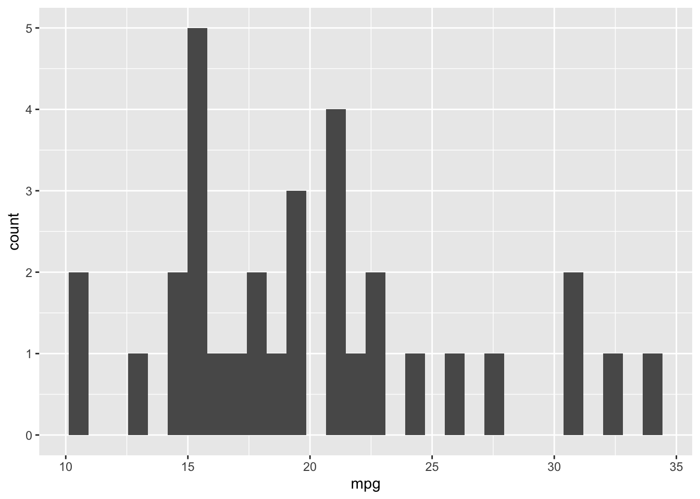
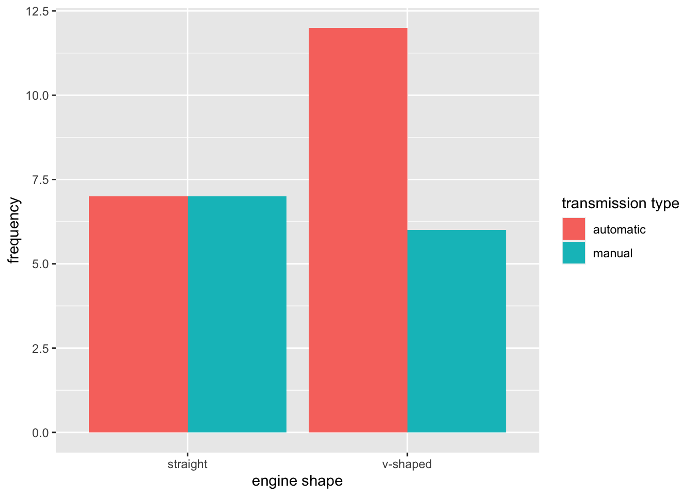

knitr::opts_chunk$set(echo = T)
library(tidyverse)Overview
Today we’re going to discuss data visualization. Specifically, we will discuss univariate & bivariate visualizations using ggplot2 , a package for data visualization based on the Grammar of Graphics.
For this demo, we’ll be using mtcars, a dataset that comes built into R. We’ll also do some recoding to make the dataset easier to understand.
mtcars <- mtcars %>%
as_tibble() %>%
mutate(
vs=case_when(
vs==0 ~ "v-shaped",
vs==1 ~ "straight"
),
am=case_when(
am==0 ~ "automatic",
am==1 ~ "manual"
)
)
# Previewing our new columns
mtcars %>%
select(am,vs)Univariate Visualizations
Numerical variables
ggplot works by passing variables to aesthetics, concrete visual aspects of a plot. Let’s say we want to create a histogram to examine the distribution of a numerical variable, like mpg, the miles per gallon of a car. A histogram works by putting numerical observations into discrete bins and plotting the height of each bin based on the number of observations.
We first initialize a ggplot object using the ggplot function, specifying the dataframe as mtcars and the x aesthetic asmpg. This tells ggplot that we are passing this aesthetic downstream. We initialize the histogram using the geom_histogram() function and “add” it to the plot using the + operator.
ggplot(mtcars,aes(x=mpg))+
geom_histogram()`stat_bin()` using `bins = 30`. Pick better value with `binwidth`.
We see that the distribution is most dense between 15 & 25mpg. Let’s try it with a few other variables - hp (horsepower), wt (weight in tons), and qsec (1/4 mile time).
ggplot(mtcars,aes(hp))+ # don't need to use the x= argument, as aes automatically first argument is x aesthetic
geom_histogram()`stat_bin()` using `bins = 30`. Pick better value with `binwidth`.ggplot(mtcars,aes(wt))+
geom_histogram()`stat_bin()` using `bins = 30`. Pick better value with `binwidth`.
ggplot(mtcars,aes(qsec))+
geom_histogram()`stat_bin()` using `bins = 30`. Pick better value with `binwidth`.We can also make a boxplot, using the geom_boxplot() function. A boxplot shows the median of a variable (center line), the first and third quartiles (ends of the box), and 1.5 x IQR (q1-q3; the “whiskers” at both ends).
ggplot(mtcars,aes(mpg))+
geom_boxplot()ggplot(mtcars,aes(hp))+
geom_boxplot()
Categorical variables
Not all variables are numeric. Often we may wish to visualize the counts (or frequencies) of a categorical variable.
We can use the geom_bar() function to visualize the counts of a categorical variable such as am (automatic vs. manual transmission in cars).
ggplot(mtcars,aes(am))+
geom_bar()We can even give the x axis a more informative label as well as add a title using the labs() function.
ggplot(mtcars,aes(am))+
geom_bar()+
labs(x="transmission type",
title = "transmission frequencies")Bivariate visualizations
Sometimes we wish to visualize two variables at once. For example, we may wish to see if cars that weigh more tend to have lower mpg, or if automatic cars are more likely to have straight-shaped engines. In these scenarios, we need bivariate visualizations.
Visualizing two numerical variables
A common bivariate plot is a scatterplot, where we plot two numerical variables against each other, with each “dot” being an individual data point.
ggplot(mtcars, aes(x=wt,y=mpg))+
geom_point()
ggplot(mtcars, aes(wt,mpg))+ # x and y are first two arguments so no need to use x= and y=
geom_point()
Visualizing two categorical variables
To visualize two categorical variables, first we have to compute their counts.1
mtcars_counts <- mtcars %>%
group_by(vs,am) %>%
summarise(n=n()) %>%
ungroup()`summarise()` has grouped output by 'vs'. You can override using the `.groups`
argument.mtcars_countsWe then pass the mtcars_counts data frame to ggplot, and specify the following aesthetics:
x=vsx axis will be engine shapey=ny axis will be frequencyfill=amthe fill, or coloring, of the bars will be based on whether the car has automatic or manual transmission
We use geom_col(), rather than geom_bar() , when we are manually specifying all aesthetics.
ggplot(mtcars_counts,aes(x=vs,y=n,fill=am))+
geom_col()By default, geom_col() creates stacked bar graphs. I often find these difficult to interpret (or at worst, misleading), so I prefer to use the position="dodge" argument to specify that the bars should be side-by-side rather than stacked.
ggplot(mtcars_counts,aes(x=vs,y=n,fill=am))+
geom_col(position = "dodge")+
scale_fill_discrete(name="transmission type")+
labs(x="engine shape",
y="frequency")
Visualizing one categorical and one numerical variable
We often care about the relationship between a categorical variable and a numerical variable. For example, is the distribution of miles-per-gallon different for automatic vs. manual tranmission?
Here, we’ll make boxplots. However, rather than make a single boxplot for mpg, we will make two side-by-side boxplots - one for manual transmission cars, and one for automatic transmission cars.
ggplot(mtcars,aes(am,mpg))+
geom_boxplot()Here we can see that manual transmission cars tend to have a much higher mpg than automatic cars.
Conclusion
We’ll talk much more about data visualization, including flow relationships, in the next few lectures. This just serves as an introduction to data visualization and the ggplot method of data plotting.
Footnotes
We could technically let ggplot do this for us, but I always prefer to do the data analysis myself and leave the visualization to ggplot.↩︎